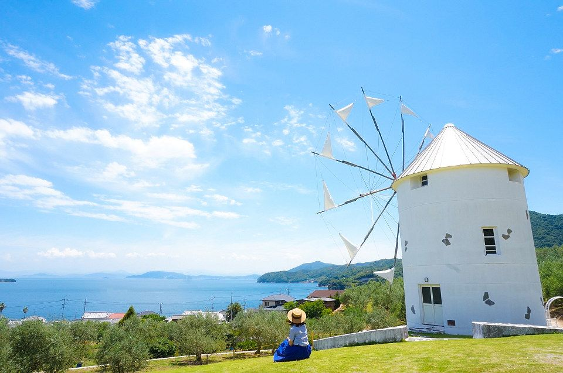
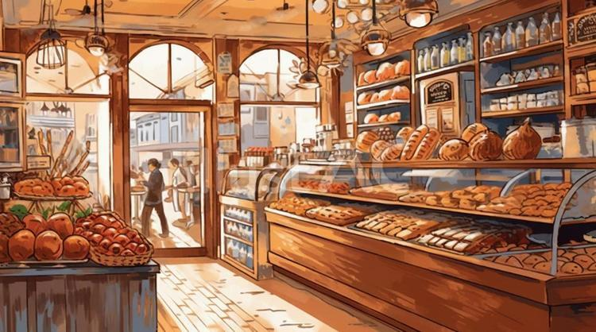

小豆島とは、瀬戸内海に位置する自然豊かな島です。小豆島といえば、醤油やそうめん、オリーブなどが 有名です。ですが、小豆島にはまだあまり知られていない魅力的な食べ物がたくさんあります。ここでは、 そんな知る人ぞ知る小豆島のおいしいグルメを紹介します。

あずきベーカリーは、小さな古民家を利用した落ち着いた雰囲気のパン屋さんです。地元の人からも 愛されており、種類豊富なパンがそろっているため、子どもから大人まで幅広い世代に人気があります。 特におすすめなのは、程よい甘さのあんことバターの相性が抜群の「あんバター」です。人気のパンは すぐに売り切れてしまうことも多いため、訪れる際は午前中に行くことをおすすめします。
‣営業日 土・日曜日(定休日はInstagramに記載)
‣営業時間 9:00～16:00(売り切れ次第終了)
タコのまくらは、古民家を改築した海を眺めながらゆったりと過ごせるカフェです。こだわりの珈琲と おかしを楽しめるほか、小豆島ならではの飲み物も味わうことができます。季節ごとに異なるスイーツを楽しめるのも 魅力の一つです。特におすすめなのは、たっぷりいちごがのった「こぼれるいちごのパイ」です。人気メニューは 売り切れてしまうことも多いため、確実に味わいたい方は事前に電話で取り置きをしておくことをおすすめします。
‣営業日 10～6月：一か月のうちどこかの一週間(Instagramに記載)
7～8月：水・木・金・土曜日
‣営業時間 11:00～16:30(L.O. 16:00)